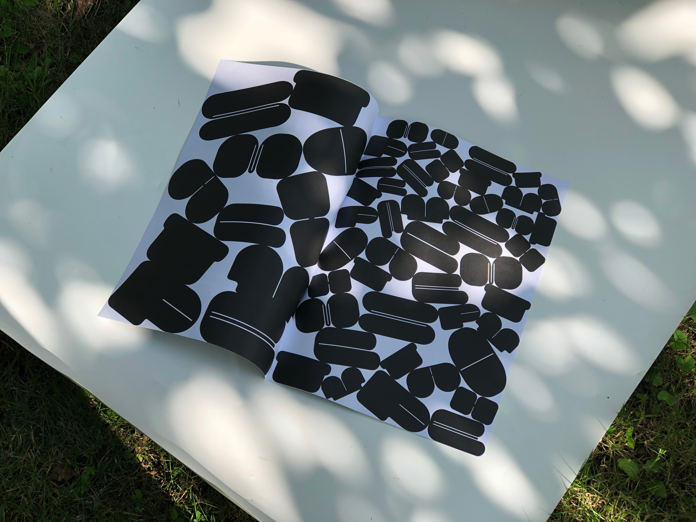
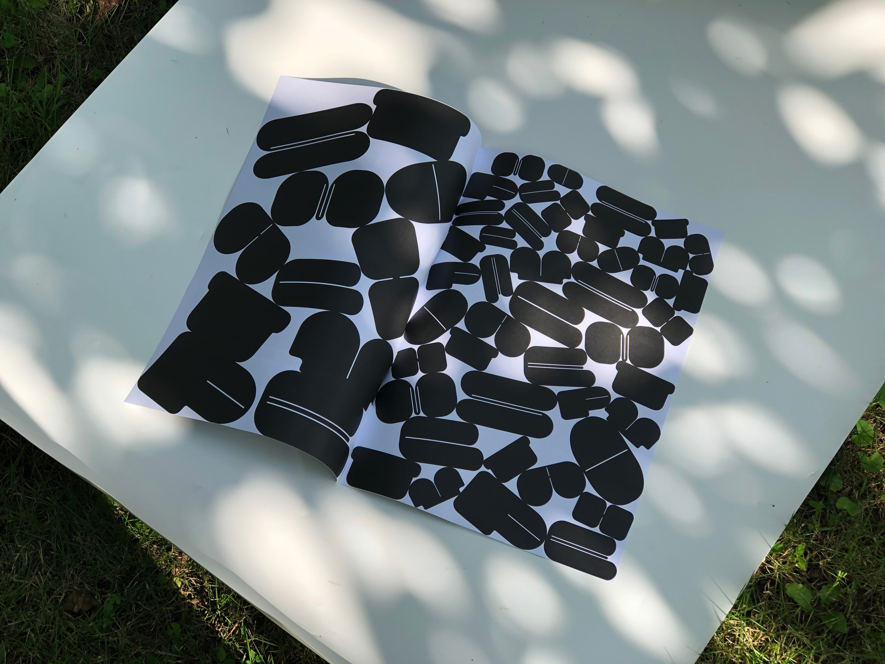

2024
Still cooking...(..•˘_˘•..)
2023
Practices pack
This site presents the creative coding practices that I made. A transfer station.
Creative Coding
2023
Creative Computational
This site presents the final student projects from the course Creative Computation for Visual Communication Design, organised at the VCD MA programme at Aalto University School of Arts, Design and Architecture.
Front page designed and developed by
Ella Eskola and Zhiying Deng.
website
2023
Zhiying's website
Exactly what you are scrolling at right now.
website
2023
I Am Fine Thank You And You?
A website pratice. Go nonsense. Can zoom in&out as you like.
website
2023
2022
The Garden of Joann
A gift for my bestfriend Joann that carries our important memories.
website
2022


The Unearthed Fonts
This is a graphic font project based on a non-grid derivative in site-specific context. It explores the possibilities of font grids and fonts by unearthing fonts from "off-grid", preserving the original wild state.
website/graphic font
2022
Texts or it didn't happen
"I plant a mystery in people's heart." Sentences can be randomly to create vague outlines in the mind.
website
2022
YELLOW SCREEN
Do we need so much takeout? Is our laziness cultivated by this? Did our laziness promote this kind of thing, promote the growth of capitalists' interests and squeeze the riders twice?
collaborative project
video/installation/book design
2022

2021
Digital Fold
A detachable book. Showing the current situation of digital refugees. There is reflection, doubt and self-consistency. It easy to compare the pre-texts and post-texts, facilitating the generation of open ideas.
research-based book/writing
2021

Piano
type
2021
Pump
type
2021

 
